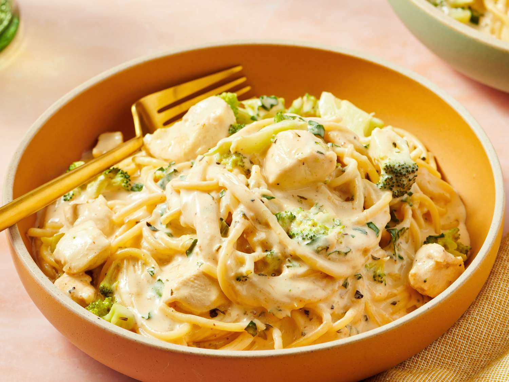

Classic Ratatouille
A comforting Provençal vegetable dish layered with zucchini, eggplant, peppers, and a rich tomato base. Perfect for a cozy dinner!
Garlic Butter Shrimp
Juicy shrimp tossed in garlic, butter, and lemon — ready in under 15 minutes. Serve with rice or pasta for an easy weeknight meal.
Chocolate Lava Cake

Decadent individual cakes with a gooey chocolate center. Best enjoyed warm with vanilla ice cream.
Homemade Pizza Margherita

Thin crust topped with tomato sauce, mozzarella, and fresh basil. A timeless Italian favorite!
French Onion Soup
A classic soup topped with toasted baguette slices and melted Gruyère cheese. Rich, savory, and heartwarming.
Caprese Salad
Fresh mozzarella, juicy tomatoes, and basil leaves drizzled with balsamic glaze. A light and refreshing starter.
Beef Bourguignon

A French classic stew made with beef, red wine, carrots, onions, and herbs. Slow-cooked for tender perfection.
Lemon Tart

A zesty dessert with a buttery crust and tangy lemon filling. Perfectly balanced between sweet and sour.
Chicken Alfredo Pasta
Creamy Alfredo sauce tossed with fettuccine and tender chicken breast. Comfort food at its best.
Creme Brûlée
A rich vanilla custard topped with caramelized sugar. Crack the top and enjoy this French classic!
Love These Recipes?
If you enjoyed these delicious dishes and want even more, check out our exclusive Le Cheffe Cookbook filled with gourmet recipes, cooking tips, and secrets from the kitchen.
Get the Cookbook